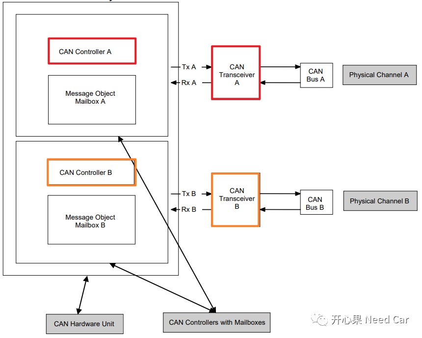
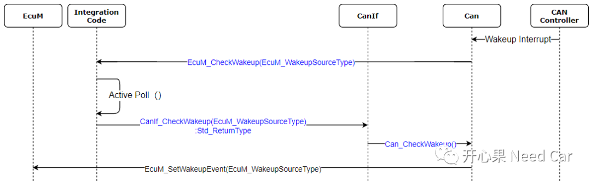
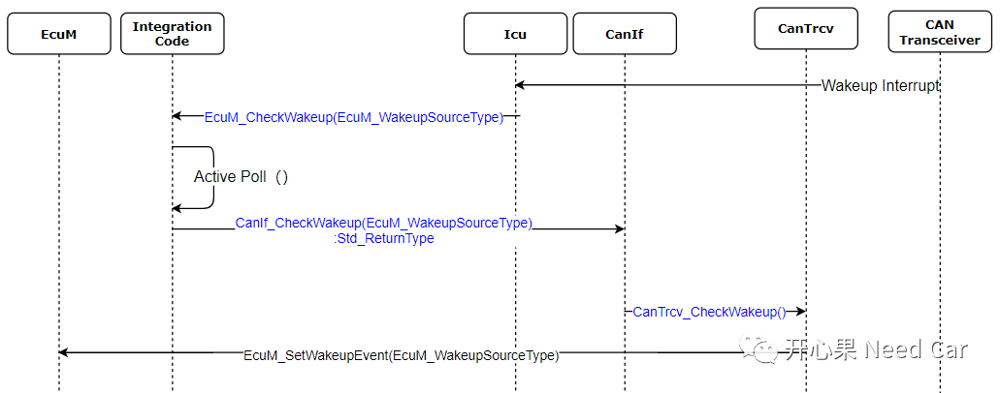
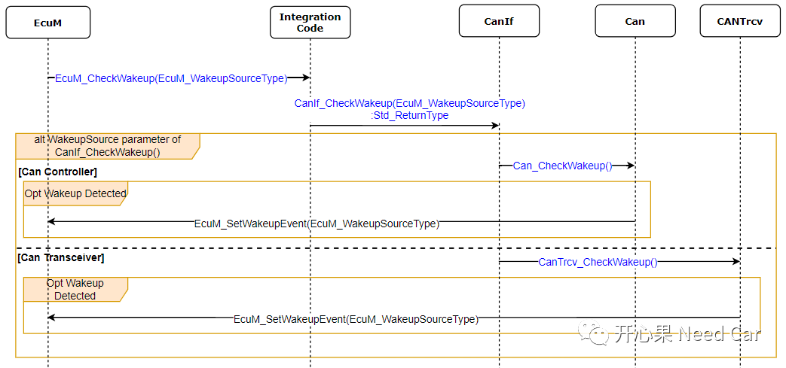

开心果 Need Car · 2022-04-08T08:21:00+08:00 · 微信原文
我们知道，在谈论Autosar网络管理之前，需要检查唤醒源，并且确保其有效。对唤醒源的操作，一般需要经过Check、Set、Valid三步曲。这三步都是必须的吗？本文聊聊Check和Set。
提示：基于CAN总线讨论
对于CAN ，CC(communication controller)或Trcv(Transceiver)可以使用中断或轮询来检测唤醒事件。而CC和Trcv的关系自不必细说，谁离了谁也干不成事(报文无法收/发)，为什么这么说呢？看一下下图，你就清楚CC和Trcv的关系了：

也正是因为CC和Trcv关系如此，所以当有Can Bus的唤醒事件时，EcuM分不清楚Can Bus唤醒是CC发现的还是Trcv发现的，如果EcuM想知道谁发现的，就需要问问CC和Trcv，你俩谁发现的？EcuM怎么问呢？不怕CC和Trcv不说，EcuM通过EcuM_CheckWakeup()一查，是CC还是Trcv，EcuM就清楚了。EcuM要彻查到底谁发现的唤醒事件，它自己只会传“圣旨”，即调用EcuM_CheckWakeup()，实际调查，还是依靠地方官员（CanIf、CC or Trcv）。
1、中断方式Check唤醒事件
当外部中断唤醒事件到来时，可以是Can Controller中断，也可以是CAN Transceiver中断。如下展示了EcuM"圣旨"的传递过程（Check），此过程中，中断例程中主动调用EcuM的EcuM_CheckWakeup()，让EcuM检查，此方式不拖泥带水，响应迅速。


2、轮询方式Check唤醒事件
相比于中断方式，Polling方式就“磨叽”了，CC和Trcv都不主动告诉EcuM，等EcuM检查，就像小学生考试成绩，考不好不会主动告诉家长，都是家长想起来，主动问自己家熊孩子考的咋样一样一样的道理。EcuM于是就在自己的Task（比如：10ms）中一个一个检查CC和Trcv，如下所示：

提示：Check时，会对应一个CheckWakeupTimer，这个参数可配
实际，EcuM并不关心到底谁发现的，它只关心是哪个网络需要唤醒，并将其传递给ComM。
那我们思考一个问题：“如果Trcv可以Filter，确保了特定帧唤醒，EcuM是不是可以不用Check?”答：个人赞同（注：此问题是一个读者给出的思考）。
比如目前使用率比较高的NXP TJA1145，这款Transceiver具有PN过滤功能，如果我们的项目中，要求指定Range内的网络管理报文唤醒网络，NXP TJA1145即可将此Range范围的网络管理报文识别出来，而不必让Ecu起来（被供电），进行软件过滤。
细心的读者已经发现了，EcuM_CheckWakeup()这个接口放在Integration Code中，这什么意思呢？此部分属于Autosar的Callout函数，此函数的实现由User定义，从这个角度讲，如果Trcv可以过滤（即Check）,即可直接调用EcuM的EcuM_SetWakeupEvent(EcuM_WakeupSourceType)接口，告诉EcuM有唤醒事件。
参考资料
AUTOSAR_SWS_CANDriver.pdf
AUTOSAR_SWS_ECUStateManager.pdf
往期精彩回顾